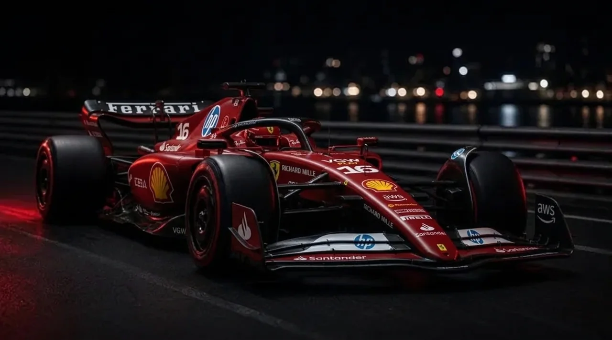
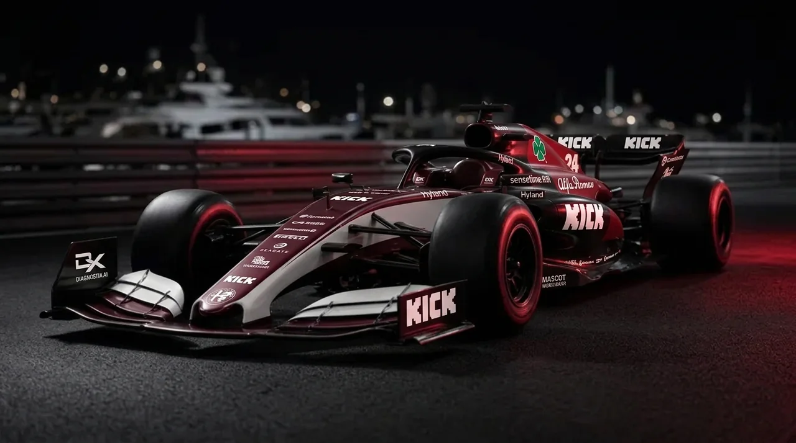

Sessões 1–2 (e 5 para o S10). Mesmo piloto, mesmas condições: pista seca, Grande Prêmio > Treino Livre.
F1 23 · Circuito de Mônaco · Projeto de ML/DL · FECAF
O piloto, o carro… ou dois cliques na asa traseira? Capturamos a telemetria do jogo, testamos 11 setups em 2 carros e treinamos modelos para responder com dados.
carregando dados…
◆ Vídeo: ilustração gerada por IA · Carros: imagens de referência com marcas oficiais
O experimento

Sessões 1–2 (e 5 para o S10). Mesmo piloto, mesmas condições: pista seca, Grande Prêmio > Treino Livre.

Sessões 3–4 (e 6 para o S10). Desempenho real dos carros ligado, para o carro importar.
Desenho
S0 é a base (TimeTrialKing). S1–S9 mudam um único ajuste em relação ao S0 — assim, a diferença de tempo tem um culpado claro.
S10 foi sugerido por uma IA e muda ~8 ajustes de uma vez: é o teste "IA × engenheiro".
S0 é rodado no início e no fim de cada sessão para medir o ruído do piloto.
Captura de telemetria
O jogo transmite pacotes UDP (porta 20777) ~20× por segundo.
capturar_telemetria.py decodifica Motion, LapData, CarTelemetry, Setup, History.
Só voltas válidas: sem volta de saída, box, flashback; corte de 107% da mediana.
voltas.csv (1 linha/volta) e amostras.csv (posição, velocidade, freio…).
Python / R tidymodels, validação por blocos, deploy em API.
# uma sessão = 1 carro × 1 setup python capturar_telemetria.py --carro ferrari --setup S10 --sessao 5 --saida dados ✔ volta 7 1:12.418 válida S10 ferrari ✔ volta 8 1:12.106 válida S10 ferrari ✘ volta 9 inválida (limite de pista)
Ilustração do formato de saída — não são tempos reais.
Telemetria interativa
Mapa desenhado com as coordenadas world_x/world_z do jogo. Pontos de frenagem = momento em que o freio passa de <10% para ≥30%. Abrir o dashboard completo ↗
Resultados
melhor do carro melhor que S0 pior que S0
Vídeos
Simulador
Escolha o carro, mexa nos ajustes e o modelo prevê o tempo de volta. Os ajustes começam no S0.
Ajuste e clique em prever.
verificando API…
modelo padrão mais rápido que o S0 mais lento que o S0
Metodologia
Equipe